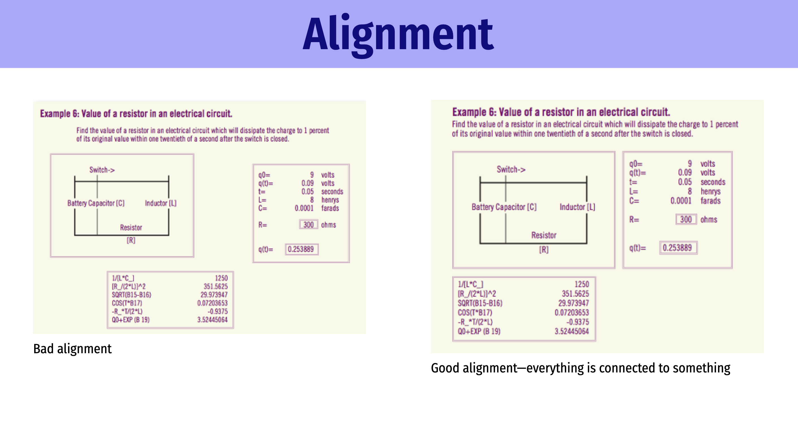
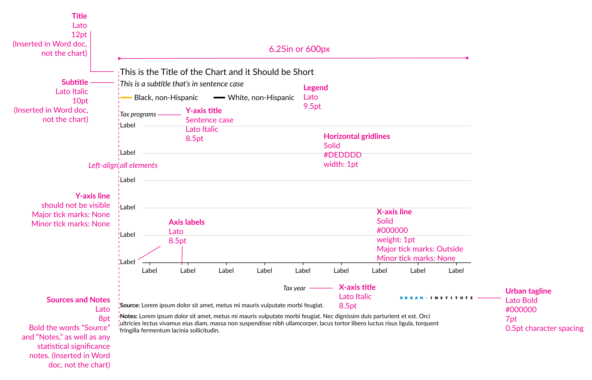
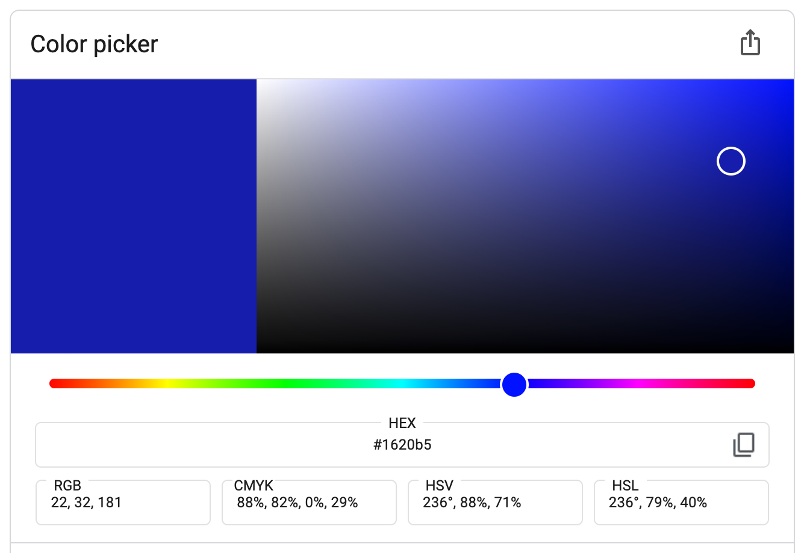

Week 2 FAQs
FAQs
Hi everyone!
Since exercise 2 involved no code, I don’t have much in the way of code tips or anything, but I do have some responses to questions that a lot of you had!
Why do you use ✓s for grades?
Many of you wondered why I didn’t take different points off for wrong or slightly wrong answers in the first exercise (not so much with this exercise 2, since it was just a redesign). You’re used to more standard grading practices where you lose points for minor errors and whatnot.
I’ve never liked this system of grading and have always tried to avoid it. I believe that curiosity is essential to learning. Paranoia over missing a decimal point in an answer kills curiosity.
There’s a scene in season 1 of Ted Lasso where Ted cites a made-up quote by Walt Whitman (see timestamp 2:15 here):
Be curious, not judgmental.
Despite the fact that Walt Whitman never said this, I really like this sentiment, and I think it 100% applies to learning.
One of the objectives of this class is “Be curious and confident in consuming and producing data visualizations”—from even before Ted Lasso was a thing. I want you to embrace curiosity when learning this R and design stuff. I don’t want to spend all my time judging every little error, and I don’t want you to live in fear of judgment.
I have a few strategies for encouraging judgment-free curiosity in this class:
Less informative grading: Researchers who study pedagogy (i.e. teaching methods) have long found evidence that less informative grading improves student motivation. In 2024 two economists published a paper that found national-level evidence for this idea based a change in national policy on grading systems in Sweden (Collins and Lundstedt 2024). Sweden had long used a four-level grading system in its public school system: fail, pass, pass with distinction, and pass with special distinction. In the 2012/2013 academic year, though, they switched to an American-style A–F system. Nationally, student performance dropped significantly—graduation rates dropped, grades dropped, and motivation dropped.
Granular grading systems (A, A−, B+, B, etc.) actually hurt student motivation because lots of effort is spent trying to move up the scale (i.e. thinking “If I can just get two more questions right on this assignment, I’ll go from a B+ to an A−”).
Less informative systems actually increase motivation because you’re not worried about exact point totals and can instead have space to play around, make mistakes, and be curious.
Hence the ✓+, ✓, and ✓− system I use.
I’m not grading your coding ability, I’m not checking each line of code to make sure it produces some exact final figure, and I’m not looking for perfect. Also note that a ✓ does not require 100% completion—you will sometimes get stuck with weird errors that you can’t solve, or the demands of pandemic living might occasionally become overwhelming. I’m looking for good faith effort, that’s all. Try hard, do good work, and you’ll get a ✓.
I reserve ✓−s for when the effort is bare minimum or noticeably not completed (e.g., the code is copied/pasted from somewhere on the internet and doesn’t run; your weekly check-in has just a couple words for each point; you only turn in one page of the assignment; etc.). I’ll sometimes use intermediate ✓s like ✓−+ when work isn’t quite fully ✓− and not quite fully ✓.
Exciting and muddy things: Your weekly check-ins let you tell me what new and exciting things you’re learning, and they let me know where you’re getting stuck so I can get things unstuck. These don’t need to be written formally with citations or anything—use these to tell me the cool things you’re finding. This is space for judgment-free curiosity!
#TidyTuesday: The whole point of the #TidyTuesday assignment is to let you do something neat with R. It’s entirely self directed. Make something cool.
Why does # mean both headings and code comments?
This is a tricky quirk of using Quarto. In Markdown, the # symbol is how you create headings, and you can combine them to create nested headings and subheadings:
# Task 1: Check-in
Some text
# Task 2: Something
## A subheading
Some more textYou make these headings outside of R code chunks.
In R, the # is how you add comments to your code. Anything after a # doesn’t count as code and won’t run. You can add comments to whole lines:
# Filter the mpg data, group it, and summarize it
mpg |>
filter(cty > 10) |>
group_by(class) |>
summarize(avg_hwy = mean(hwy))Or you can add comments to the ends of lines:
mpg |>
filter(cty > 10) |> # Only rows where cty is 10+
group_by(class) |> # Divide into class groups
summarize(avg_hwy = mean(hwy)) # Find the average hwy in each groupSo,
- When writing text,
#creates headings - When writing code in an R chunk,
#creates comments
They can even get used in the same document:
# Task 1: Check-in
Some text
# Task 2: Something
## A subheading
Some more text
```{r}
# Here's some code
ggplot(mpg, ...) +
geom_point()
```
And some more textI will never do anything with graphic design—why did we have to learn these principles?
Yes you will :)
For one thing, all the graphs you’ll make in the rest of this class are designed objects. For the mini projects and the final project, you’ll need to make well-designed outputs.
But even outside of this class, you will use these principles. If you write a report, you’ll likely use headings, and you’ll need to think about their alignment and proximity and contrast. If you do any sort of research, you’ll need to make images for your papers, and you’ll need to make posters for conferences, and you’ll need to make slides for presentations. You will even inevitably have to make some sort of sign—even something like “The meeting scheduled for noon has been moved to room BLAH at 1 PM”—to put on a conference room door, or whatever.
As I mentioned in the lecture, once you know about CRAP, you’ll start using it everywhere—every billboard, poster, book, website, etc. you see, you’ll try to identify what the designed tried to align each element with, which fonts they used, why they used the colors they did, why they grouped the text and images the way they did, and so on. Or when you come across something that you intuitively feel is ugly and poorly designed, you’ll be able to say why. It’s like a secret code that’s been unlocked.
You will use this stuff—I promise.
What does all this graphic design stuff have to do with R and ggplot?
Everything! Starting with week 5, you’ll learn how to adjust the colors and fonts and sizes for all the different elements of your plots with ggplot, and you’ll need to follow good CRAP principles to make sure you do it well.
How does CRAP relate to other things like the Gestalt Principles?
In your readings for week 2, you learned about the Gestalt Principles for human perception, which describe how humans see and perceive patterns in things. You also learned about CRAP—contrast, repetition, alignment, and proximity. There are other categorizations of design principles as well that we didn’t cover. What’s up with all these things?
All these general principles capture something deeper and more systematic about how humans think about the world, and they mostly overlap (like, proximity is both a Gestalt principle and the “P” in CRAP). Human minds like it when things are grouped correctly and ordered in nice visual hierarchies with pleasant aesthetics. Both CRAP and the Gestalt Principles provide guidance for how to visually group things in good ways.
Does something need to have all four elements to be well designed? Or can it have contrast and not alignment?
In general you’ll want to consider all four at the same time. Remember this slide from the lecture?

The image on the left actually is okay, contrast-wise. It uses the same font (yay repetition) and different weights within the font (yay contrast). But even with the C and the R in CRAP, it still looks messy and hard to read. Aligning everything fixes it.
Are the CRAP principles hard-and-fast rules? Will following CRAP lead to the same final designs?
A few of you said that you worried that having a checklist like CRAP would lead to homogenous designs (i.e. everyone will make the same things) or said that it’s unclear which of the four principles is more important or should take precedence.
Two people can take the same content and—iteratively working through CRAP and making sure everything has contrast, repetition, alignment, and proximity—create completely different designs for it. This checklist doesn’t provide any universally correct answers, and none of the principles are more or less important than the others.
You all created a huge variety of posters. Some of you used a single font with varied weights (e.g., light and semibold); some of you used multiple fonts (e.g., sans serif and slab serif); some of you centered everything; some of you left-aligned everything; some of you had half of the elements left-aligned and half right-aligned. Some of you had extra images; some had tons of color; some embraced whitespace and minimalism. It was amazing to see all the variation!
And CRAP was hidden beneath all the variation. Most of you were deliberate about aligning things on the page, choosing contrasting colors or fonts, grouping information in logical ways, and repeating similar visual cues and ideas. There are no correct answers, but correct principles can be followed.
If you want to know more about basic design skills like this, I’d highly recommend getting The Non-Designer’s Design and Type Book. It’s a fantastic resource and goes way more in depth into CRAP and basic typography.
Does CRAP only work for single-page things like graphs and posters? Or does it work for reports and books?
It works for reports and books and everything else! Take a look at Oxfam’s 2024 annual report, for instance. There are 24 pages, but it all has the same general feel, with repeated fonts and colors, strong typographic contrast between light and bold fonts, and the same types of heading and paragraph styles throughout. Or look at CARE USA’s annual report, or even an Urban Institute report. Or look at any of your textbooks—each chapter start page will be the same, all the headings and subheadings will be the same, all the captions will look the same, etc. CRAP is there!
Organizations do this kind of branding on purpose and will have clear visual style guides that they try to use. GSU has specific guidelines for using logos and fonts and colors in ways that follow general graphic design principles. The Urban Institute has the most comprehensive style guide for data visualization specifically that I’ve ever seen. Like, check out their basic graph skeleton (complete with contrast, repetition, alignment, and proximity):

I even do this for this class. Notice that the color scheme in the slides matches the color scheme of the website. It actually comes from the plasma color scale from viridis! I repeat and contrast these same 8 colors throughout the course:
viridisLite::viridis(8, option = "plasma", begin = 0.1, end = 0.9)I also repeat the same contrasting fonts throughout the site and slides: Fira Sans Condensed (chunky fun sans serif) and Barlow (regular sans serif).
I wanted to try other fonts, but I can only see a few in Microsoft Word? Where can I find fonts to use?
The best, easiest place to find thousands of different fonts is Google Fonts. You can sort them by font family (i.e. sans serif, serif, etc.), by font weight (i.e. do they have ultra thin and ultra thick versions, etc.), and by popularity (i.e. do lots of other people use and like them). And best of all, they’re free.
Download them from Google and then install them on your computer by double clicking on the .otf or .ttf files. If you’re on Windows, you’ll need to install these as an administrator by right clicking and choosing “Install as administrator”. Once you do that, you’ll be able to use them in all the programs on your computer, including Word.
Are there resources for knowing which fonts pair well together?
Yes! People make these all the time (and their websites often disappear), but if you search for “google font pairings” you’ll find all sorts of tools and blog posts and guides to good pairings. But remember that these are always 100% subjective, so use them as ideas, not as unchanging rules.
I’ve included some helpful ones at the Fonts section at the design resources page, like fontpair.
Are there other color palettes we can use in R beyond the defaults?
Is there a way to check that my color palettes are accessible if I’m not using a premade one?
Yep! Check out the “Accessibility” section of the Design page in the Resources section for some websites that help with this.
I noticed Illustrator isn’t free for GSU students anymore. Are there other graphics editors?
Yeah, unfortunately GSU doesn’t provide free access its Creative Cloud software for students (but it does for employees, including student employees). For future exercises and projects, you don’t have to use Illustrator—there are (free!) alternatives. See here for more details.
How do hex codes work? How do they create colors?
Oh man hex codes are so cool. Check out this fascinating video about one guy’s journey to learn how to read them:
Put simply, a hex code shows you the proportion of red, green, and blue in a color. The first two digits of the 6-digit code are for red; the second two are for green; the last two are for blue.
The digits are a little weird. Instead of being based on regular numbers, like where 0 means nothing and 9 means the max (with numbers in between, like 5 would be the middle-ish), the digits use base 16 (or hexadecimal), so the full range of numbers goes from 0 to F:
0, 1, 2, 3, 4, 5, 6, 7, 8, 9, A, B, C, D, E, FSo, if a hex color is #000000◉ (or 00 00 00, with spaces to better see the R, G, and B values), it would be 0% red, 0% green, and 0% blue, which is black!
To boost one of these colors to 100%, you’d use F, which is the highest value in hexadecimal notation.
- To get pure red, you’d make the red digits FF and leave the green and blue digits at 0, like
#FF0000◉. - Pure green would be 100% green and 0% of the other colors, or
#00FF00◉ - Pure blue would be 100% blue and 0% of the other colors, or
#0000FF◉ - You get white by setting all the colors to 100%, or
#FFFFFF◉
You can get tons of different colors by mixing different proportions of red, blue, and green.
- We know from kindergarten that purple is a mix of red and blue, so we can make red and blue both be 100% and leave green at 0:
#FF00FF◉ - If that’s too bright, we can make the red and blue less intense. Instead of using 100% of each, we can use 50% of each with the hexadecimal number 8 (which is in the middle of the numbers 0 to F):
#800080◉ - Yellow light is a mix of red and green with no blue, so
#FFFF00◉. If we lower the green to 50% we’ll get orange, like#FF8000◉
In practice, as shown in this video, very very few people can intuitively read these codes. Most of the time, you copy and paste them into whatever you’re doing. You can find them by using color pickers, like this one that appears when you search Google for “color picker”. These tools show you all sorts of different representations of the color, like RGB values that range from 0 to 255, CMYK values that range from 0% to 100%, hex codes, and so on:

References
Collins, Matthew, and Jonas Lundstedt. 2024. “The Effects of More Informative Grading on Student Outcomes.” Journal of Economic Behavior & Organization 218 (February): 514–49. https://doi.org/10.1016/j.jebo.2023.12.001.